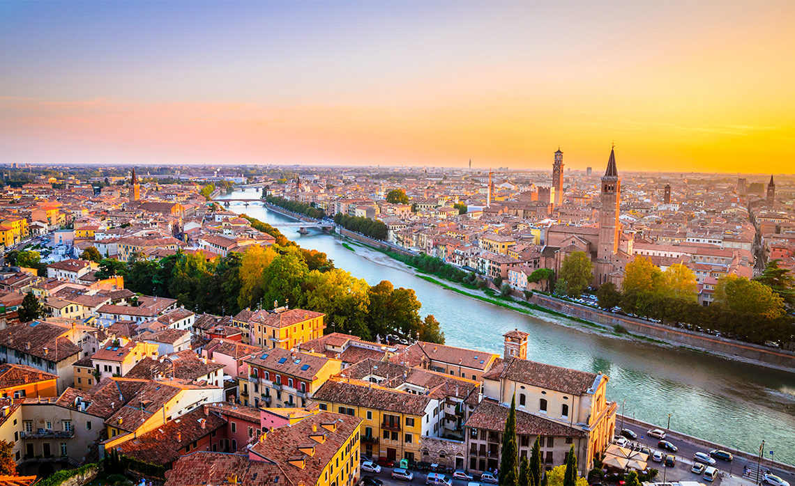

Verona, the City of Love. Explore this incredible city with the help of our guide so that you don't burn a hole in your pocket!
What to do in Verona: 
Off the beaten path
Start your trip with a cappuccino on Piazza Bra- Verona's unoffical arrival hall. Here, medieval walls stand side to side with Renaissance architecture, but it's the Roman amphitheatre that steals the show- 10 Euros for entry.
Exploring the streets
Next hit the streets and head for piazza Delle Erbe. Walk through Via Mazzini to get there and explore Verona's shopping streets along the way.
Verona's Balcony
This is the busiest spot in Verona so try to get there early to make sure you get the full view. Take a pen and write on Juliets wall to mark your stay. If you didn't know this suppousdly where Romeo and Juliet met. You can feel the romance.
Where to stay in Verona:
Antica Valopolicella
This hotel is perfect if you have a budget. Its clean and practical, minutes from the Piazza Delle Erbe and you really can't beat the price for such a central location. Plus breakfast is included!!
Hotel Milano and Spa
This htoel is slightly more luxury, but still a great price for what you're getting. If you decide not to stay here still check out their Terreza Bar for amazing views.
Wallace House
Also known as 'Stella House', offers a car park and is just a few minutes from the Arena.
Where to eat in Verona:
Focacceria Ponte Pietra
Nestled along the winding cobblestone street that leads towards the Roman Stone Bridge, this little store sells pizaa and focaccia for 1.50 euro and they are heaven.
L-Ocanda Navona
Situated in a world of its own, one block away from Julietts Balcony, hands down the best restaurant in Verona, and not over priced!
Cappa Cafe
Next to the stretch of walk near the river, where you can peer at Ponte Pietro. This restaurant oozes italian charm with affordable menus and great portion sizes.
Subscribe here to hear when we have information on other contries in Europe: